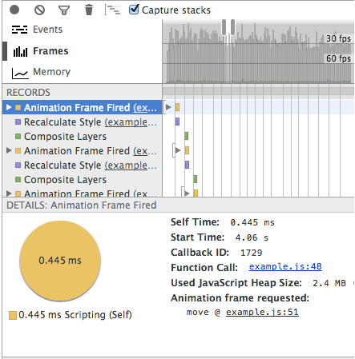

When animating/moving HTML elements, setting their position with -webkit-transform: matrix3d() gives two to ten times faster frame rates compared to top/left or -webkit-transform: matrix(). On mobile devices you can observe native app like performance with transform: matrix3d.
2 to 10 times faster HTML animations
May 10, 2014
Demo
It moves a panel that contains 10,000 div elements. On my macbook air running chrome, transform:matrix3d gives 30 - 40 fps while position:top/left and transform:matrix gives 10-15 fps. You can check the frame rate by selecting Show FPS meter on Rendering tab of chrome developer tools.
The following image shows snapshot of frames timeline with top/left.

This is the snapshot of frames timeline with transform:matrix3d.

transform: matrix3d takes out the paint operation which gives increased frame.
The 3d translation layers offer a way of pre-blitting all the stuff inside the DOM element into a layer, which is therefore available for direct blitting operations inside the render tree. Well, at least that's the conceptual idea behind.
martensms on html5gamedevs.com
The frame rates with transform:matrix3d becomes about 10 times higher than other methods as the content of the panel which moves gets heavier. I tried with about a 1,000 small SVG graphs with 1,000 data points.
Most of the discussions I found on the internet were comparing top/left to transform: matrix or transform: translate 1, 2, but not so much information about using transform: matrix3d.